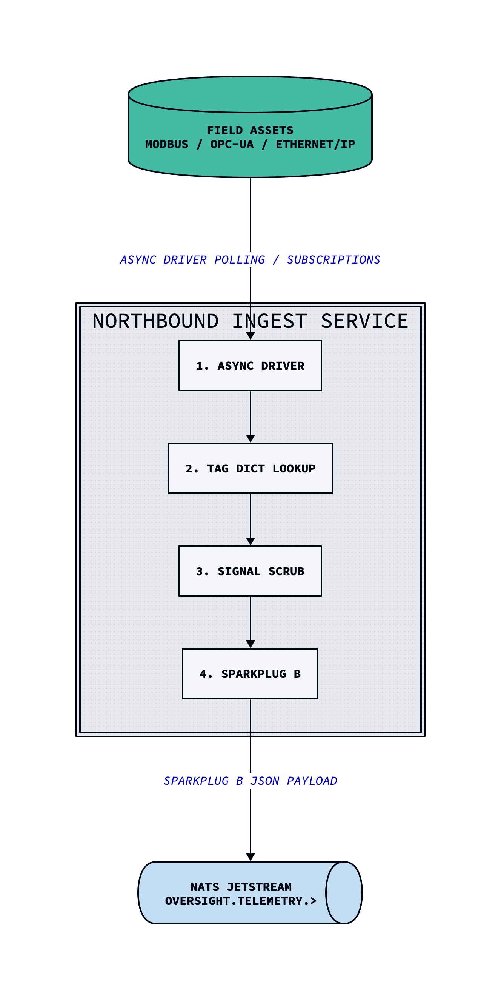

RFC-002 - Northbound Ingest Service & Protocol Normalization
Author: Amy Mummert
Status: Proposed
Date: 2026-09-01
Target Components: Northbound Ingest Service & Protocol Normalization
Background / Context
The Oversight ICS architecture relies on strict separation of between deterministic OT control systems and the Level 3.5 demilitarized zone (Level 3.5). With this in mind, this RFC proposes a Northbound Ingest Service (NIS) with protocol normalization for secure protocol termination and semantic normalization.
Industrial control assets expose telemetry to through source protocols such as Modbus, OPC-UA, and Ethernet/IP. These protocols expose raw memory addresses, vendor-specific addressing, data types, device metadata, timestamps, and quality bits. If downstream components were allowed to consume this data directly, the system would become tightly coupled with specific hardware vendors and introduce a severe safety risk.
This RFC defines the design and operation of the Northbound Ingest Service (NIS) and the protocol normalization layer.
Component Responsibilities
Northbound Ingest Service: Terminates and normalizes raw industrial protocols into Sparkplug B JSON payloads and extracts raw source data. It is a read-only service. It has no authority to issue control commands to physical assets.
Problem Statement
Oversight ICS is designed to ingest high-throughput telemetry exceeding 10,000 points per second from the deterministic control layers. If Oversight directly ingested the raw industrial protocol data, it would create several critical safety risks/failures.
The main reasons for this are: 1. Risk of exposing raw memory addresses to downstream systems. 2. Vendors may not support the same protocols. 3. Allowing continuous open polling sessions directly against field PLCs introduces network jitter, possible denial of service, and violations of IEC 62264 zone segregation.
Without protocol normalization, every downstream consumer would need to understand the raw protocols, which creates unnecessary coupling and an increased attack surface. This is a huge safety risk.
Proposed Solution
The proposed solution is to implement a Northbound Ingest Service (NIS) that ingests raw industrial protocol data, normalizes it using Sparkplug-B JSON payloads, and pushes them to the NATS JetStream Unified Namespace (UNS).
Data Flow Pipeline

Supported Protocols
| Protocol | Role |
|---|---|
| Modbus TCP | PLC/RTU Telemetry |
| OPC-UA TCP | Industrial Telemetry |
| OPC-UA Pub/Sub | Publish/Subscribe telemetry |
| OPC-UA Client/Server | Request/Response telemetry |
| Ethernet/IP | Industrial Telemetry |
| MQTT / Sparkplug-B | Industrial MQTT Telemetry |
Protocol Adaptor Architecture
References
Northbound Interface & Southbound Interface
Understanding Northbound vs. Southbound Connections in edge IoT
MQTT Sparkplug B Industrial Protocol Implementation Guide
Industrial Control Systems Security